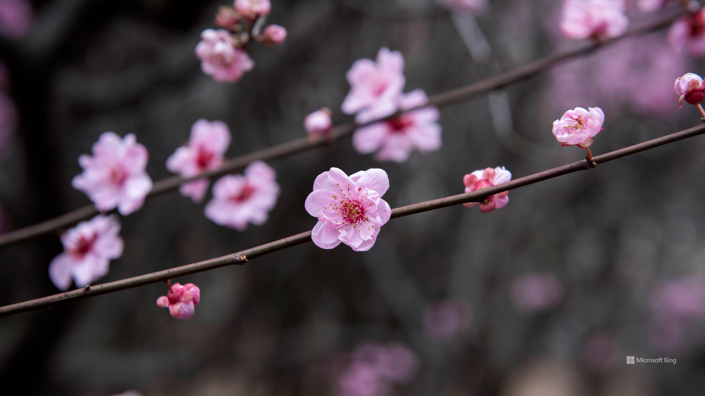
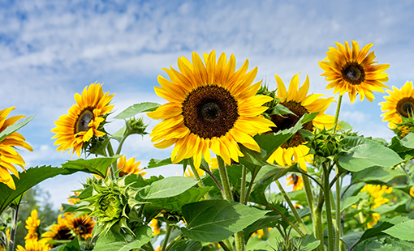
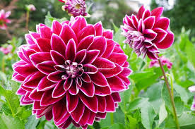

My Favorite Flowers
- Cherry Blossoms
- Sunflowers
- Dahlias
Cherry Blossoms
Cherry blossoms, often a symbol of renewal, captivate people around the world with their delicate pink and white petals. Blooming in early spring, these blossoms create breathtaking landscapes that draw visitors to parks and gardens, particularly in countries like Japan, where hanami—the tradition of viewing cherry blossoms—has been cherished for centuries.Beyond their cultural symbolism, cherry blossoms also bring communities together, turning ordinary spaces into vibrant gatherings of joy, art, and connection.
Sunflowers
Sunflowers, with their bold golden petals and towering stems, are often seen as a symbol of warmth, positivity, and resilience. Their bright faces follow the path of the sun across the sky, a phenomenon known as heliotropism. Beyond their beauty, sunflowers are remarkably versatile—providing seeds rich in nutrients, oil for cooking, and even contributing to environmental sustainability by helping clean contaminated soil. Standing tall in fields that seem to glow under the summer sun, they embody optimism and strength, reminding us to keep reaching upward toward light and growth.
Dahlias
Dahlias are admired for their striking variety, blooming in an array of colors, shapes, and sizes that make them stand out in any garden. Native to Mexico, these flowers carry a rich cultural history and are often associated with elegance, creativity, and inner strength. Their intricate petal patterns, ranging from delicate pom-poms to bold, spiky forms, symbolize uniqueness and diversity. Blooming from midsummer into autumn, dahlias add a vibrant touch of life long after many other flowers have faded, making them a lasting emblem of beauty, resilience, and the joy of self-expression.